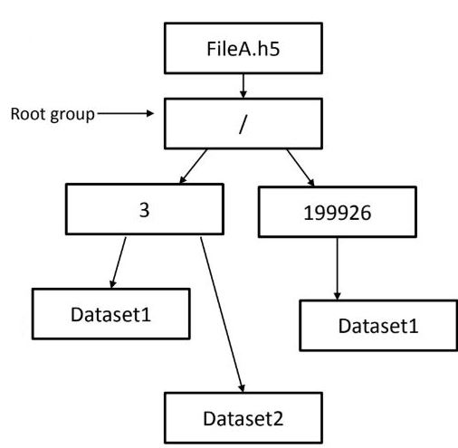
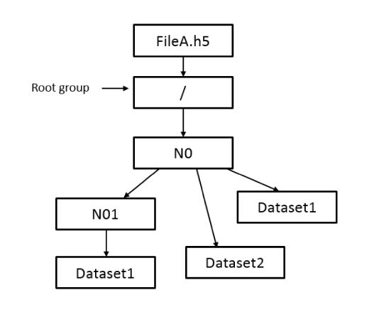
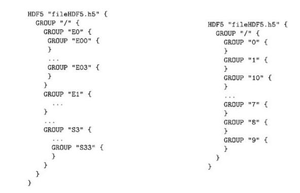
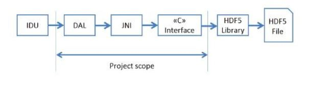

Gaia is an ambitious astrometric space mission adopted within the scientific programme
of the European Space Agency (ESA) in October 2000. It measures with very high
accuracy the positions and velocities of a large number of stars and astronomical objects.
At the end of the mission, a detailed three-dimensional map of more than one billion
stars will be obtained.
Gaia is an ambitious astrometric space mission adopted within the scientific programme
of the European Space Agency (ESA) in October 2000. It measures with very high
accuracy the positions and velocities of a large number of stars and astronomical objects.
At the end of the mission, a detailed three-dimensional map of more than one billion
stars will be obtained.
The Data Analysis and Processing Consortium (DPAC), a large team of scientists and
software developers, is in charge of processing the Gaia data with the aim of producing
the Gaia Catalogue.
One of the most important DPAC systems is the Intermediate Data Updating (IDU),
executed at the Marenostrum supercomputer hosted by the Barcelona Supercomputing
Center (BSC).
Every few months, all the raw data accumulated up to that moment need to be reprocess in order to:
- refine the image parameters from the astrometric images acquired by the instrument
- refine the Cross Match (XM) for all the detections.
In particular, the XM will handle an enormous
number of detections at the end of the mission, so it will obviously not be possible to
handle them in a single process.
Moreover, limitation and contrains imposed by the features of the execution environment should be considered.
Therefore, it is necessary to optimize the Data Access Layer (DAL) in
order to efficiently store the huge amount of data coming from the spacecraft, and to
access it in a smart manner.
Implementation
It has been developed and implemented an efficient and flexible file format based on Hierarchical Data Format version 5 (HDF5),
arranging the detections by a spatial index such as Hierarchical
Equal Area isoLatitude Pixelization (HEALPix) to tessellate the sphere.
In this way it
is possible to distribute and process the detections separately and in parallel, according
to their distribution on the sky. Moreover, the HEALPix library and the framework
implemented here allows to consider the data at different resolution levels according to
the desired precision.
Two different alternatives have been designed and developed, namely, a Flat solution
and a Hierarchical solution. It refers to the distribution of the data through the file.
In the first case, all the dataset is contained inside a single group. On the other hand,
the hierarchical solution stores the groups of data in a hierarchical way according to the
HEALPix hierarchy, as it is possible to see on the following pictures.
Flat solution

Hierarchical solution

The analysis of the results has been based on the time to write and read
data, the compression ratio and the read/write rate. Moreover, the different alternatives
have been evaluated on two systems with different sets of data as input.
The test results report a substantial increase on the read rate with respect to the previous
implementations. In fact, the data access speed was improved by more than 50%,
especially for random data access.
The difference between both HDF5 implementations is rather small.
However, we concluded that overall the hierarchical one is preferable.

Hierarchical test structure and Flat test structure for level 1
Software
The Gaia DPAC software is implemented in Java, where the HDF5 Application Programming Interface (API)
support is quite limited.
Thus, it has also been necessary
to use the Java Native Interface (JNI) to adapt the software developed in this project
(in C language), which follows the HDF5 C API.

The Java part of this project has been integrated into an existing
operational software library, DpcbTools, in coordination with the Barcelona IDU/DPCB
team. This has allowed to integrate the work done in this project into the existing DAL
architecture in the most efficient way.
If you want to know more about this project, check
this link out.